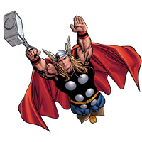
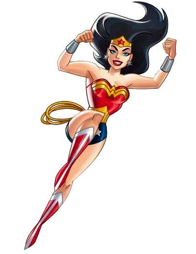
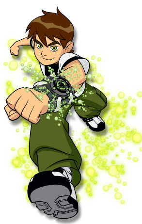

Thor

Thor é um personagem fictício que aparece nas histórias em quadrinhos publicadas pela Marvel Comics. Baseado no deus Thor da Mitologia Nórdica, ele foi criado por Stan Lee, Larry Lieber e Jack Kirby. Estreando na Era de Prata dos quadrinhos, o personagem apareceu pela primeira vez em Journey into Mystery #83 (agosto de 1962). Ele é um membro fundador da equipe de heróis dos Vingadores.
Mulher Maravilha

Mulher-Maravilha (em inglês, Wonder Woman) é uma personagem fictícia de histórias em quadrinhos publicadas pela editora estadunidense DC Comics, originalmente é uma super-heroína de origem m grego-romana, alter ego da princesa Diana de Themyscira, também conhecida como Diana Prince no Universo DC. Embaixadora honorária da ONU é considerada um dos maiores ícones da cultura pop do sexo feminino da nona arte e ícone da cultura feminista, sua primeira aventura foi na revista All Star Comics #8 de dezembro de 1941, nos Estados Unidos, escrito por Charles Moulton e desenhada por H. G. Peter (Harry George Peter). A história timidamente iniciada tem continuação direta em Sensation Comics #1 de janeiro de 1942. Com o sucesso, ela ganhou sua própria revista em quadrinhos em maio de 1942, Wonder Woman #1, que foi transferida exclusivamente para a DC Comics em 1944. Sua história de origem sofreu alterações algumas vezes mas, apesar das diferentes origens e dos diferentes uniformes, é possível dizer que a essência da personagem permaneceu a mesma desde sua criação. a Mulher-Maravilha é a princesa e embaixadora das Amazonas da ilha paradisíaca Themyscira, filha da rainha das amazonas, Hipólita. Ela foi mandada ao “mundo dos homens” para propagar a paz, sendo a defensora da verdade e da vida na luta entre os homens e o firmamento, entre os mortais e os deuses. Possuindo habilidades super-humanas e seu laço da verdade, ela faz parte da trindade da DC Comics e muitas vezes funciona como o equilíbrio entre os extremos de Superman e Batman. Tornou-se integrante da Liga da Justiça.
Ben 10

Ben 10 é uma aclamada franquia de desenhos animados norte-americana criada por "Man of Action" (um grupo formado por Duncan Rouleau, Joe Casey, Joe Kelly e Steven T. Seagle) e é produzida pelo Cartoon Network Studios.
A franquia passa sobre um garoto que usa um dispositivo extraterrestre em formato de relógio de pulso, que a cada série é renovado ou trocado. O Omnitrix permite se transformar em diversas criaturas alienígenas.
A franquia Ben 10 já arrecadou mais de 2 bilhões de dólares em vendas de varejo na Europa, Oriente Médio e África (EMEA) e já vendeu 100 milhões de brinquedos em todo o mundo.
Aos 10 anos de idade, Benjamin Kirby Tennyson descobre um dispositivo alienígena na floresta chamado de Omnitrix, que lhe permite se transformar em 10 diferentes espécies alienígenas. Ao longo de suas férias de verão, viajando o país num trailer com seu avô Max e de sua prima Gwen, Ben luta contra o crime e alienígenas do mal com seus novos poderes, adquirindo a capacidade de se transformar em mais nove novos alienígenas ao longo do caminho.